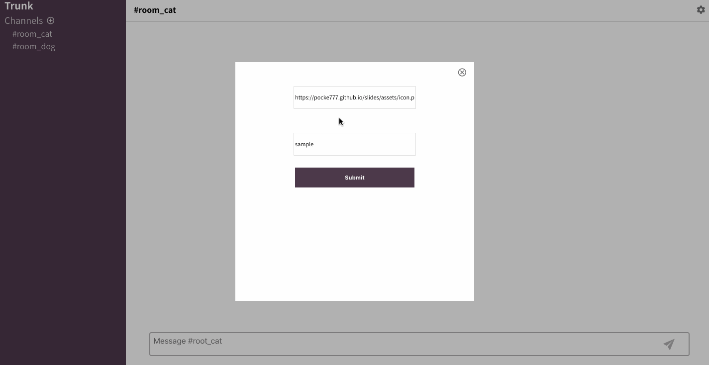
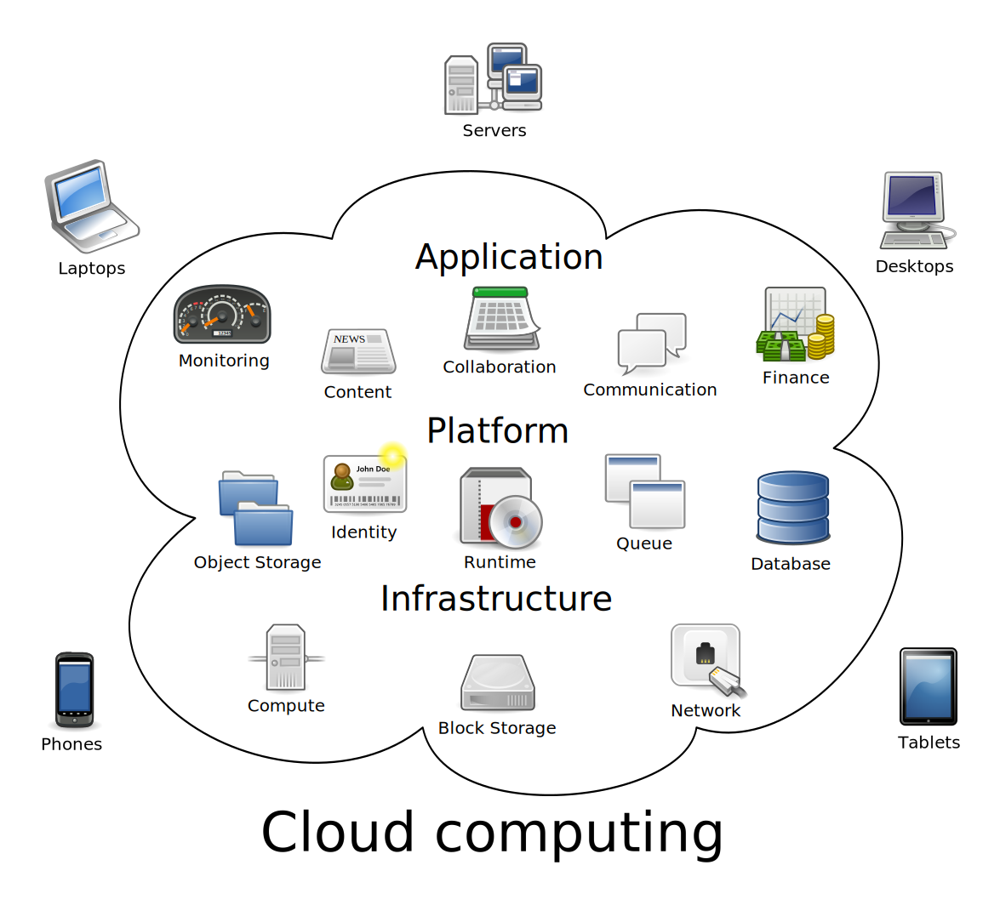
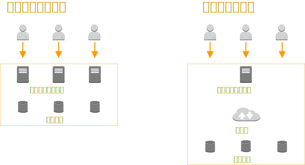
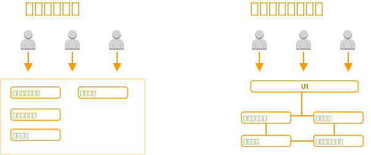
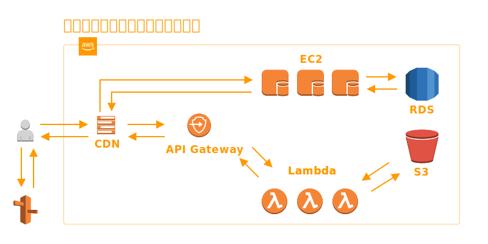
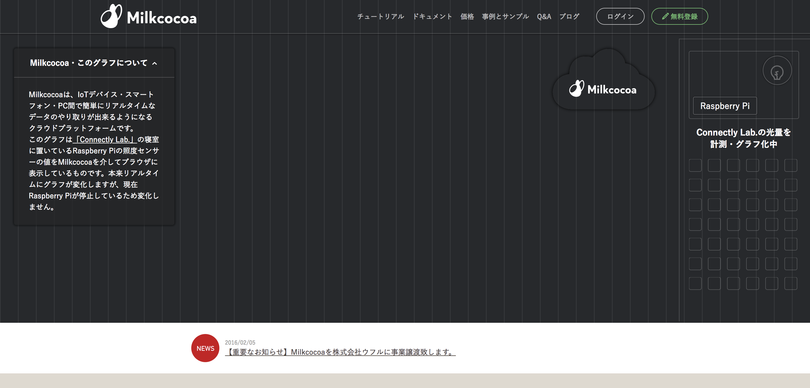
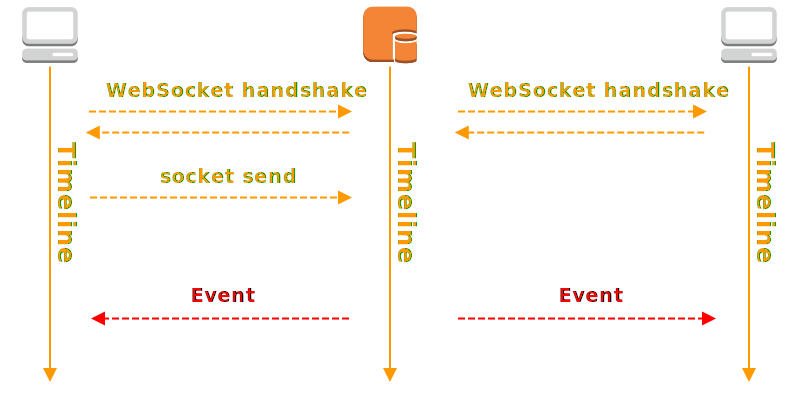
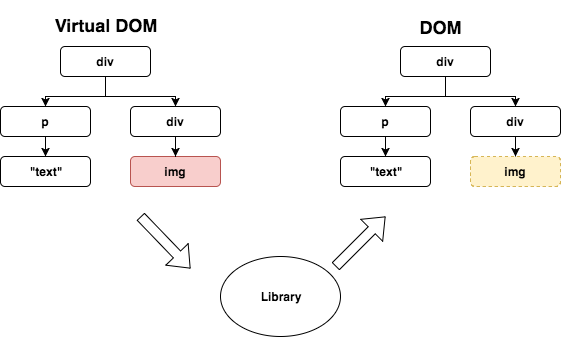
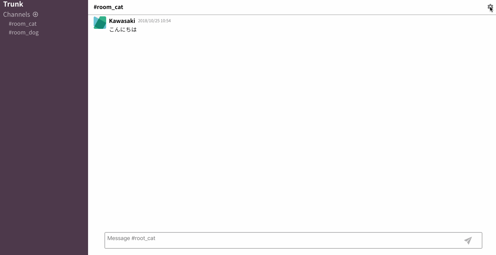
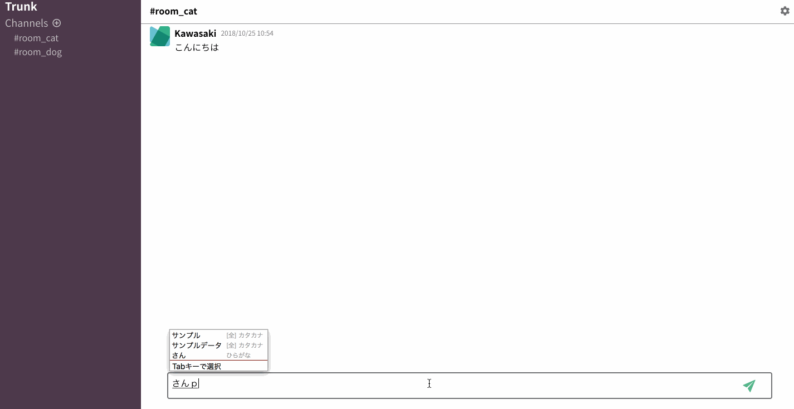

リアルタイムWebアプリハンズオン
Vue.js & Milkcocoa
Agenda
- トレーニング概要
- 自己紹介
- クラウドコンピューティング
- Milkcocoa紹介
- Javascript基礎
- Vue.js解説
- 実践Vue.jsアプリケーション
Vue.jsとMilkcocoaを使ってSlackを作ってみよう

WHAT I'M ABOUT
株式会社TRUNK TL Kawasaki Atsushi
2013年じげんグループHRメディア事業のPMやバックエンドを担当。
新規事業立ち上げの経験を経てエンジニアリングユニットのマネージャーに従事。
2015年に株式会社カヤックへ入社。
クライアントワークや自社サービス(Lobi)のフロントエンド、バックエンドおよびインフラ設計、構築、運用を担当。
クラウドコンピューティング概論
クラウドとはオンプレミスとよばれる、自社で運用されたサーバーで提供されたサービスを利用するのに対して
ユーザーがネットワークを介して各種コンピューティングサービスを受ける形態

クラウドコンピューティングの分類
SaaS（Software as a Service)
バズワードとしてよく取り上げられるSaasですが、ソフトウェアをネットワーク経由でサービスとして提供する形態はASP(Application Service Provider)として
従来より行われている。ASPとSaaSを区別することなく使われていることが多いがなぜ今ここまでバズワードになったのか?
ひとつはマルチテナント方式の普及により再び注目を浴びていることが考えらる。
このマルチテナント方式によりデータの分離、セキュリティの配慮をしつつメンテナンスコストが低くリソースの利用効率が高い
構成の実現が可能になった

PaaS(Platform as a Service)
PaaSでは、ソフトウェアを構築および稼動させるための土台となるプラットフォームを、インターネット経由のサービスとして提供する
Azure、AWS、Google App Engineなどがこの分類にあたる。
IaaS(Infrastructure as a Service)
仮想サーバをはじめとした機材やネットワークなどのインフラを、インターネット上のサービスとして提供する形態
Google Compute Engine,EC2などがこの分類にあたる。
マイクロサービス
マイクロサービスとは、ソフトウェア作成手法の1つです。このアーキテクチャはモノリシックなアプリケーションと対比するもので
モノリシックなアーキテクチャが一つのアプリケーションにユーザーへの提供機能を全て含めることで、マイクロサービスとは
必要な機能単位にアプリケーションを分割し、統合することでサービスを提供する形態のことである。

マイクロサービスアーキテクチャ例 (AWS)

Milkcocoa紹介
Milkcocoaは、IoTデバイス・スマートフォン・PC間で簡単にリアルタイムなデータのやり取りが出来るようになるクラウドプラットフォーム
https://mlkcca.com/
リアルタイム通信
従来のWebアプリケーションでは単方向通信と呼ばれ、リクエストはクライアントからのみ送られサーバーから通信を開始することができませんでした。(それでも、擬似的な双方向通信を実現するポーリングなどの手法がありましたが
WebSocketという新しいプロトコルが生まれたことにより双方向通信の実現ハードルが下がりリアルタイム通信アプリケーションが
広く普及しました。

リアルタイム通信手法
| 呼称 |
プロトコル |
サーバーPush |
メモリ消費 |
遅延 |
導入ハードル |
| Polling |
HTTP |
☓ |
☓ |
☓ |
容易 |
| LongPolling(Comet) |
HTTP |
○ |
△ |
△ |
容易 |
| ServerSentEvents |
HTTP |
○ |
○ |
○ |
ブラウザ互換依存あり |
| WebSocket |
WebSocket |
○ |
○ |
◎ |
面倒 |
Milkcocoaの使い方
- アカウントの作成(無料)
- アプリの作成
- 組み込み
Javascript基礎
ブラウザ上で実行可能なプログラミング言語の一種。しかし、Node.jsなど非ブラウザ環境においても使用されている
HTML
マークアップ言語で、これを使ってウェブコンテンツに構造と意味を与えます。 例えば段落や見出しや表を定義したり、ページに画像や動画を入れたりします。
CSS
HTML コンテンツに適用するスタイリング規則の言語です。 例えば背景とフォントの色を設定したり、複数カラムにコンテンツをレイアウトしたりします。
Javascript
動的にコンテンツを更新したり、マルチメディアを管理したり、その他多くのことができるスクリプト言語です。
Javascriptデータ型
プリミティブ型
true // Boolean
null // Null
undefined // 未定義
2018 // Number
"こんにちは" // String
Symbol("hello") // Symbol (ES2015)
オブジェクト型
['hello1', 'hello1', 'hello1'] // 配列
{ hello1: "world1", hello2: "world2" } // Object
[{ hello: "world1" }, { hello: "world2" }] // Collection
function () {} // 関数
Javascript文法
(繰り返し処理 / 条件分岐 / 関数 / イベント)
繰り返し処理条件分岐関数イベント
FizzBuzz問題をやってみよう
1 ~ 100までの数字を出力する
3で割り切れる場合はFizz
5で割り切れる場合はBuzz
3と5の両方で割り切れる場合はFizzBuzzを出力しよう
Vue.jsの特徴
- 学習コストが低い(API/テンプレート)
- リアクティブなデータバインディング
- コンポーネント指向UI
- ファイルサイズが軽量
React vs Vue.js
React では、すべてのコンポーネントは JSX を用いた 描画関数 (render) の中でそれらの UI を表現を行う。
これにより、完全なプログラミング言語 (JavaScript) の力を活用してビューを構築することができる。
一方Vue.jsではJSXサポートがありながら、HTML/Pugのようなテンプレートでビューを構築していくことが可能
AngularJS vs Vue.js
AngularJSはフルスタックフレームワークであり、開発に必要なものはすべて含まれている。
標準でルーティング機能が備わっていたり、ユニットテストやE2Eテストも組み込みやすくなっている。
一方、Vue.jsはビューに焦点を絞ったフレームワークで学習コストが低いことが特徴
Vue.jsインスタンスの生成
new Vue({
// Vue.jsとDOMの関連付け
el: "#app",
// データ
data: {
message: "Hello"
}
},
// ライフサイクルフック
created: function() {
console.log("created!!")
}
},
// メソッドの定義
methods: {
say: function(msg) {
alert("Hello" + msg)
}
}
},
})
Vue.jsを触ってみよう
- Hello World! となっている部分を Hello Vue!に変更してみよう
- 入力されている文字数が20文字以上になったら `alert('not more than 20')` とアラートを表示しよう
See the Pen Vue.js Sample Form by pickrusu (@pickrusu) on CodePen.
Vue.jsの裏側
ライフサイクル

仮想DOM
Vue.jsはDOMとJavaScriptのデータを同期するためにリアクティブなデータバインディングを持っている
データの変更後に仮想DOMに反映され、仮想DOMと実際のDOMの差分を計算して変更部分を実際のDOMに反映し、Viewが変更される

実装ステップ
- Vueインスタンスの生成
- モーダルの実装
- 入力データの反映
- Milkcocoaとつなぎ込み
- コンポーネント化
Vueのインスタンスの生成
全ての Vue アプリケーション は、Vue 関数で新しい Vue インスタンスを作成することによって始まる
var vm = new Vue({
// オプション
})
モーダルの実装
- modalVisibledをVueアプリのデータ追加
- v-ifディレクティブによるDOMの出し分け
- クリックイベントのListen
- モーダル内のフォームとVueアプリのデータを同期

入力データの反映
- messagesのデータをVueアプリに追加。 メッセージ部分をモックデータに置き換え
- 入力フォームのデータをv-modelディレクティブによりVueアプリデータと同期
- 送信ボタンにクリックイベントをリッスン。関数内でmessagesの変数に対して追加

サンプルデータ
const messages = [
{
timestamp: "2018/01/01 11:00",
value: {
name: "scottish",
icon: "https://pocke777.github.io/slides/assets/icon.png",
text: "これはサンプルテキストです"
}
},
{
timestamp: "2018/01/01 11:00",
value: {
name: "scottish",
icon: "https://pocke777.github.io/slides/assets/icon.png",
text: "これはサンプルテキストです"
}
},
{
timestamp: "2018/01/01 11:00",
value: {
name: "scottish",
icon: "https://pocke777.github.io/slides/assets/icon.png",
text: "これはサンプルテキストです"
}
}
];
Milkcocoaとつなぎ込み
詳細はこちらのドキュメントを参照
- scriptタグを読み込む
- AppIdからオブジェクトの生成
const milkcocoa = new MilkCocoa('.mlkcca.com')
- データストアの取得
const ds = milkcocoa.dataStore('sample');
- 送信ボタンを押したときのコールバックでデータの保存
ds.push({name : this.name, send_at: new Date(), content : this.currentInput, icon: this.icon});
- データ保存時のイベントにリッスン
ds.on('push', (value) => {
this.messages.push(value);
});
- ロード時に初期データの取得
ds.stream()
.next((err, messages) => {
this.messages = messages;
});
- データ構造に合わせてHTMLの調整
コンポーネント化
単一ファイルコンポーネント
コンポーネントとは部品という意味
ページを構成している要素を部品化し、構造・見た目・振る舞いをセットにして1ファイルにまとめて記述する
Props
親コンポーネントから子コンポーネントへとデータ(関数)の受け渡しを行う
コンポーネント化を行うための実装ステップ
- Vueコンポーネントファイルの作成
- コンポーネントの登録
- Viewの書き換え / propsの受け渡し
And more...
Vue Router
Vuex